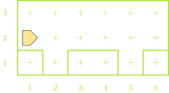
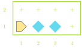
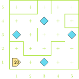
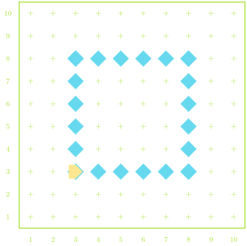
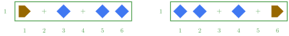

Cleaver Karel
Fred Agbo
August 28, 2026
Announcements - House Keepting
- As a policy, everyone must help create a constructive and healthy
learning community in this class.
- uphold positive classroom behaviors
- avoid disruptive classroom behaviors
- I’m retracting my statement made on the first day that says
“interject to ask”:
- Interjections are no longer permitted during lectures.
- Raise your hand and wait for me to grant you permission to ask question.
- Wait untill the class activity time or during group collaboration to ask your questions.
- Otherwise, note all your questions until the end of class.
- Interjections are no longer permitted during lectures.
- If I could not attend to your issues in class, come see me in the office during office hours.
- Use the course Discord channel ‘Questions’ to ask all questions related to the class, assignments, and projects.
Announcements - Heads Up
- If you have not joined the Discord, please click here to join Now!
- Although the first link sent yesterday broke, but the second one worked.
- Problem Set 1 posted and it’s due on Monday Sept. 7th @
10pm!
- You’ll have basically all you need to solve it after today and Monday’s Class
- Small section meeting is starting next week
- watchout for an email from Prof. Jed on when your section meets
- If you did not recieve Prof. Jed’s email by Monday, you must not have filled out the availability poll.
- Come see me after class on Monday and we can see about getting you placed into one.
- Polling today! Use this link
- Reminder: use your first name and be consistent to be able to uniquely identify you!
- Welcome to TechByte event on Tuesday September 1 by 12 pm @ Ford 102.
The Run Journal Tool
- A new tool/concept being piloted this semester is that of the
“run_journal” - Every time you run your code, you should have some concept of what you are expecting to happen. The Run Journal formalizes that.
- Each time you run the code for an assignment, you will be prompted:
- Once at the start:
- What are you expecting to happen?
- Twice at the end:
- What actually happened?
- What is your next step?
- Once at the start:
- The journals are automatically saved, and you will upload them alongside your code whenever you are submitting assignments/projects
- The goal is to emphasize and highlight the process of solving these problems, not just the final product
Pothole Decomposition
- Functions can also be a very effective way to break a larger problem into smaller, more managable pieces
- Suppose we wanted Karel to fill all the “holes” in the below world with a beeper

Breaking down Potholes
- From a big picture perspective, we might break this down something
like:
- Moving between potholes
- Filling a pothole
- Wherever one of those actions is simple and routine enough to write
a function, we probably should!
- Moving between potholes: this is not currently routine as the amount we need to move changes
- Filling a pothole: this would be the same every time!
def main():
move()
fill_pothole()
move()
move()
fill_pothole()
move()
def fill_pothole():
turn_right()
move()
put_beeper()
turn_around()
move()
turn_right()
def turn_right():
turn_left()
turn_left()
turn_left()
def turn_around():
turn_left()
turn_left()A Quick Comment
- It is always a good idea to document and leave notes to yourself (or future readers of your code)
- Comments are pieces of text in your program that are ignored when the program is run
- Python has two methods to make a comment:
Hashtag method: Everything following a hashtag (#) on the same line is ignored
# This is a short comment!- Commonly used to make quick explanatory or labeling comments
Triple quote method: Every inside triple quotes (“““) is ignored
""" This is also a comment! """- Commonly used to describe what functions do
- Can span multiple lines
Commenting Example
def main():
"""
Main function to fill 2 potholes
at known locations.
"""
move()
fill_pothole()
move()
move()
fill_pothole()
move()
def fill_pothole():
"""
Fills a single pothole and returns
to where it started.
"""
turn_right()
move()
put_beeper() #assuming infinite beepers available
turn_around()
move()
turn_right()
def turn_right():
""" Turns Karel 90 to the right. """
turn_left()
turn_left()
turn_left()
def turn_around():
""" Convenience function to turn Karel 180 around. """
turn_left()
turn_left()If Conditions
Predicate functions can be used to control a kind of “switch”: running one piece of code if the answer is yes and a different piece of code if the answer is no.
Commonly called if or if-else statements, they take on the syntax of:
if conditional_test: # Code to run if test answer is yes else: # Code to run if test answer is noIf you don’t want the code to do anything special if the answer is no, you can ignore the “else” part of the statement:
if conditional_test: # Code to run if test is true # Carrying on with code that will always run
Remember Predicate Functions?
Potential questions you can ask Karel include:
front_is_clear() |
front_is_blocked() |
left_is_clear() |
left_is_blocked() |
right_is_clear() |
right_is_blocked() |
beepers_present() |
no_beepers_present() |
beepers_in_bag() |
no_beepers_in_bag() |
facing_north() |
not_facing_north() |
facing_south() |
not_facing_south() |
facing_east() |
not_facing_east() |
facing_west() |
not_facing_west() |
Karel’s Decisions Example
- Suppose we want Karel to move across the bottom of the world and
fill in any gaps in the beepers
- We want an even layer of beepers, no stacks
- What questions should we have Karel ask?

Iterative: while
Another common use of predicate functions is in controlling a type of iterative function called a while loop
The structure of a while loop looks like:
while some_conditional_test: # Code to repeat as long as the answer # to the conditional_test is yes (true) # Code to run once the answer is noAll of our predicate functions give yes-or-no answers though! So we can do something like
while front_is_clear(): move()which will continually move Karel forward as long as there is not a wall in front of them!
Smarty Karel
- Combining conditional statements with loops lets us write a program for Karel in which it can react to different situations in different ways, all using the same code
- Our pothole code from earlier could only handle two potholes, and they had to be perfectly spaced
- With one loop and one if statement, we can make the program fill any number of potholes with any manner of spacing!
- Key questions:
- How do we know when we are done?
- How do we know when we reach a pothole?
Smart Potholes
def main():
"""
Main function to fill any number of
potholes at any location!
"""
while front_is_clear():
if right_is_clear():
fill_pothole()
move()
def fill_pothole():
"""
Fills a single pothole and returns
to where it started.
"""
turn_right()
move()
put_beeper() #assuming infinite beepers available
turn_around()
move()
turn_right()
def turn_right():
""" Turns Karel 90 deg to the right. """
turn_left()
turn_left()
turn_left()
def turn_around():
""" Turns Karel 180 deg around. """
turn_left()
turn_left()Inception: Loops in Loops
Whenever a loop ends, you just return to the same indentation level as when that loop began
For loops inside other loops then, this means that the “inner-most” loop runs from start to finish for every step of the outer loop
while front_is_clear(): move() while not_facing_north(): turn_left() turn_left() put_beeper()
Understanding Check
Karel starts as shown to the right with 20 beepers in its bag. After executing the commands below, how many beepers are left in the bag upon the conclusion of the program?
while left_is_clear():
while front_is_clear():
move()
if no_beepers_present():
put_beeper()
turn_left()
- 12
- 13
- 15
- 19
Counting Loops
Sometimes we know the number of times we want to loop
- It is not dependent on some condition like a while loop
In these circumstances, the iterative statement called a for loop is best used
Syntax looks like:
for i in range(desired_count): # statements to be repeateddesired_countis an integer indicating the number of times you want the loop to repeat- The
iis a name that we will later make more general, but for now you can always leave it as ani
An Example for you
- Suppose we want Karel to create a 6x6 square outline of beepers in a room
- Need to repeat making each side 4 times
- Need to repeat placing a beeper and moving 6 times for each side
- Placing 6 beepers requires moving only 5 times. So not everything can be in the loop

A Potential Solution
import karel
def main():
"""Draw a 4x4 square in the world."""
position()
draw_box()
def position():
"""Move to starting corner of box."""
move()
move()
turn_left()
move()
move()
turn_right()
def turn_right():
"""Turns Karel 90 deg to the right."""
turn_left()
turn_left()
turn_left()
def draw_box():
"""Draws a box with 4 equal sides in a CCW direction."""
for i in range(4):
draw_6_line()
turn_left()
def draw_6_line():
"""Draws a straight line of 6 beepers, if space."""
for i in range(5):
if no_beepers_present():
put_beeper()
if front_is_clear():
move()
if no_beepers_present(): # Last beeper to make 6
put_beeper()Summary So Far
- Karel can only:
move()turn_left()pick_beeper()put_beeper()
- Can get info about surroundings using predicate functions
- Eg.
front_is_clear()
- Eg.
Group code into bundles
def function_name(): # Code to be grouped
- Conditional statements
Run certain code blocks only if a condition is true
if condition_test: # Code if answer yes else: # Code if answer no
- Iterative statements
whileloop: repeat code block as long as condition is truewhile condition_test: # Code to repeatforloop: repeat set number of timesfor i in range(desired_count): # Code to repeat
Group Problems Activity
Preliminaries
- Take a quick moment to introduce yourself to your group-mates for
the day
- Name
- Class year
- Major?
- Fun question of the day: if you were to add one fun command to Karel, what would it do (and be named)?
Considerations
- Don’t forget about decomposition!
- For all code writing questions today, try to think about how you
could decompose it into at least two parts
- Frequently, you’ll be able to reuse one of those parts!
- You can find a repository of worlds for today’s problems here
- Not required, but there if you want to be able to test solutions
Problem 1: Flippy Floppy
- Suppose we had the situation similar to the world below, and you
want to exchange where beepers are
- Replace empty space with a beeper, and a beeper with empty space
- The world is always the same size, Karel has infinite beepers, and always starts facing East
- Initial beepers could be anywhere though!

Problem 2: The Race
- Karel starts at the bottom of a world facing north
- There are exactly two stacks of beepers placed somewhere above them
- To win the race Karel needs to pick up both stacks of beepers and
then touch the North wall
- Remember that Karel can only pick up one beeper at a time!

Live-Coding
Option 1: More Bars in More Places
- A line of stacks of beepers goes across the bottom of Karel’s world
- Karel’s job is to spread each stack out on the corresponding avenue, with 1 beeper on each street, starting from 1st street
- You don’t know how big the world is, or how many beepers might be in
each stack
- But there will be fewer beepers than the height of the world
- Karel always starts from the lower right facing west
Visualized –

A Narrow Path
- There is a beeper path that extends from one side of the world to the other
- Karel starts on one end, facing toward the first beeper
- Goal is to follow the path to the other end